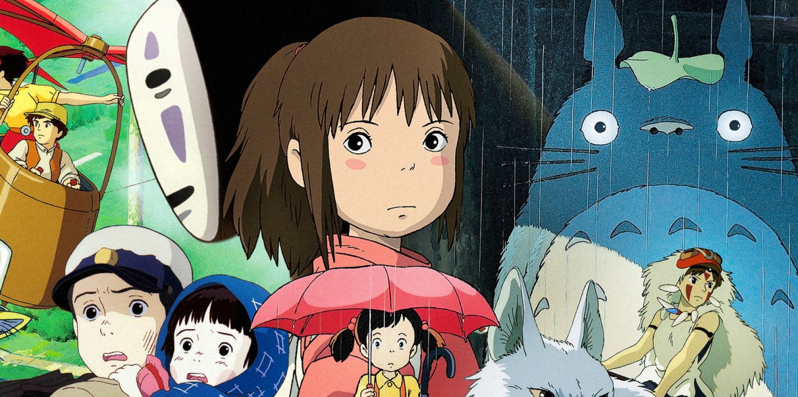

La influencia de la animación
del Estudio Ghibli
Escrito por Diego Medina
Hace 4 hrs.
Es indiscutible el hecho de que Studio Ghibli ha logrado crear las más hermosas animaciones que hoy en día tienen el impacto de sus ondas resonando en los mayores estudios de producción de entretenimiento. Fundados en los años 80’s en la ciudad de Tokio, Japón, Hayao Miyazaki, Toshio Suzuki e Isao Takahata tuvieron la misión de fundar un estudio de animación dedicado al arte de este medio, y la visión de expandir la belleza de la animación a nivel mundial.
No obstante, a pocos años de su fundación y el lanzamiento de una de sus cintas más icónicas Nausicaa Del Valle del Viento el estudio fue consultado por The Walt Disney Company con la finalidad de que esta compañía gigantesca pudiera tener los derechos de distribuciones de las próximas producciones de Ghibli a nivel regional, y posteriormente al nivel del continente americano. Sin embargo, la nivel de dedicación, profesionalismo y rigurosidad que se exhibe en la vida laboral japonesa también se le atribuía al estudio, por lo tanto, cualquier producción que fuera distribuida fuera del país tenía una cláusula específica de que no se le permitirá ser editada bajo ninguna circunstancia, con la finalidad de no desbordar la visión artística original del director.
Oficinas del Estudio de Ghibli ubicadas en Tokyo, Japón
Hayao Miyazaki, el director de la mayoría de los éxitos del estudio, es una persona sumamente meticulosa, rigurosa y algunos dirían que arrogante. Para él, el arte de la perfección al crear es lo más importante en una cinta de producción, el más mínimo detalle que pudiera estropear la producción debía ser corregida en su momento, a tal grado de que, el mismo aborrece las cintas cinematográficas de su propio hijo por no llegar al nivel de perfección que él atribuye a las suyas. Este carácter y personalidad ha llegado a ser algo bastante cansado para él. A través de numerosas entrevistas y documentales el exhibe su descontento con su vida diaria, su inhabilidad de permanecer tranquilo y su lucha sin fin por alcanzar la máxima perfección. A pesar de que esto suena deprimente, son estas cualidades las que han llevado a Miyazaki a exhibir su mayor capacidad creativa, y crear diversas maravillas en el mundo de la animación, tales cómo: Mi Vecino Totoro, Porco Rosso, El Viaje de Chihiro, El Castillo Ambulante de Howl y demás.
Es gracias a estas creaciones que el estilo de su animación ha llegado a ser reconocido a nivel internacional. La dirección artística de sus obras es completamente suficiente para deleitar los ojos de cualquier espectador, utilizando animaciones de cuadro por cuadro a una velocidad de 24 cuadros por segundo, su fluidez es constante de principio a fin, con movimientos naturales de no solo los personajes en cuadro, si no, también, de los paisajes con movimientos diminutos pero que en la totalidad de la vista producen un ambiente ameno, tales cómo el movimiento de las luces, o plantas en el fondo. Otro detalle importante a tratar es la belleza y dinamismo de cada una de sus piezas de fondo, que son pintadas de principio a fin sin la reutilización de elementos previamente vistos, estos fondos son coloridos, detallados e inclusive en algunas instancias burlan a la propia realidad, he aquí volviendo a hacer énfasis en la perfección que este estudio busca para cada uno de los componentes de sus obras.
Paísaje pintado a mano utilizado en la película: Kiki's Delivery Service
Además, el diseño de la creación de sus personajes es asombroso. Sus conceptos son creativos, espontáneos y lo suficientemente “locos” para poder encajar en la narrativa sin que estos se vean fuera de lugar. Un ejemplo de estos es el personaje principal de la película Porco Rosso, el cual es un cerdo aviador que lucha en guerras de aeroplanos. El concepto es absurdo en papel, pero el dinamismo y la inclusión de algo tan creativo y pensado de la imaginación lo hace entretenido y de cierta manera, impactante.
Pero el fuerte de estas películas no solamente es su dirección artística, si no, en el poder de su narrativa. Siendo altamente influenciados por una cultura clasica japonesa, y diversas prácticas, estilos de vida y religiones de sus regiones, los animadores muchas de las veces plasmaron las ideas fantasiosas de su cotidianidad en una historia convincente inclusive para aquellos espectadores extranjeros que no tuvieran ni la más mínima idea de lo que se estaba intentado transmitir. Eso sí, las narrativas de muchos de sus filmes podrían percibirse cómo producciones para niños, pero en la meticulosa reflexión después de su observación, los adultos podrán ver que es algo más apasionante que simplemente un cuento de hadas.
Celebración del shintoismo en el Templo Fushimi Inari Taisha, en Kyoto, Japón
Me gustaría regresar brevemente al tema de su animación, ya que es una de las cosas a las que más se le veneran a el estudio. En sus años iniciales, aún se utilizaba la práctica que hoy en día conocemos cómo “cel-shading” pero que ha perdido su definición. Básicamente, era el producto de pintar el fondo cuadro por cuadro en hojas de papel, con bolígrafos, pinturas, lápices y matices y sobre estos crear la animación de rotoscopia de los personajes. Muchos estudios ya realizaban esta práctica, y originalmente fue concebida por los estudios de animación de Disney. Conforme fué avanzando la tecnología, se empezó a utilizar software más dedicado a la visión de Ghibli, aunque su fuerte siempre fue la animación tradicional, cómo la denomina Miyazaki, la cuál es la animación 2D: el grabado en cuadro por cuadro de las acciones que pasarían en las pantallas hasta terminar dicha acción. Muchos de sus filmes constan de más de 300,000 cuadros, producidos por diversos artistas, y a pesar el tamaño y reconocimiento del estudio a nivel global, sigue siendo un pequeño estudio en cuestión de números de artistas y empleados.
Debo hacer mención honorífica al equipo de sonido, en especial a Joe Hisaishi, un compositor el cuál ha colaborado junto al estudio numerosas veces. Su especialidad es la composición de arreglos musicales clásicos de instrumentos suaves y delicados tales cómo el piano, las flautas y los violines. Joe Hisaishi ha sido muy vocal en respecto a que tanto eleva su música cada una de las películas, y no podría estar más de acuerdo. Sus piezas son una clave esencial de cómo la producción audiovisual en su totalidad puede transmitir tantos sentimientos, desde alegría, euforia, tristeza, melancolía hasta acción, desesperación y aventura. Su música es reconocida por ser un ensamble de emociones disparadas en todos los ángulos, con suficiente nivel de tradición, cultura y simbolismo en los que se siente lo que es visto, y tanto cómo imagen y sonido, se ayudan mutuamente para elevar las emociones del espectador.
No cabe duda de que el Studio Ghibli es una fuerza a reconocer que va más allá de una producción de entretenimiento, sus producciones son obras artísticas de carácter audiovisual de tan alto nivel que inclusive han sido la raíz de inspiración de muchas producciones occidentales en el sector artístico tales cómo las producciones cinematográficas del director galardonado Wes Anderson, videojuegos creados por estudios norteamericanos cómo Ori and the Blind Forest y el nuevo estudio en tendencia dirigido por Makoto Shinkai, que ha realizado producciones relevantes en la sociedad cómo your name y Weathering with You.
Pero la influencia más grande que considero que el estudio ha dejado a su audiencia es más que un espectáculo, es una obra artística a analizar, a internalizar y relacionar con el sentimiento de lo hermoso que es espectar una obra de tal calidad. Aprender el gusto de la vida cotidiana, de los pequeños detalles que crean el todo, de la fantasía infantil que nos llena de sueños y motivaciones.
Ese es el verdadero legado que creo que nos deja el maravilloso Studio Ghibli.
Contenido Reciente
Comentarios
Mario Alberto C.
No me gustó mucho como redactaron algunas cosas, la verdad espero algo mejor en el futuro, saludos, echenle ganas.
Elizabeth Mateo Sanz
amé!! me encanta este tipo de contenido!! ojalá puedan hacer más, me voy a suscribir.
Jorge Ignacio Palo
Me encantó la redacción de esté posteo, múy bien hecho y fundamentado.
Soy su fan.